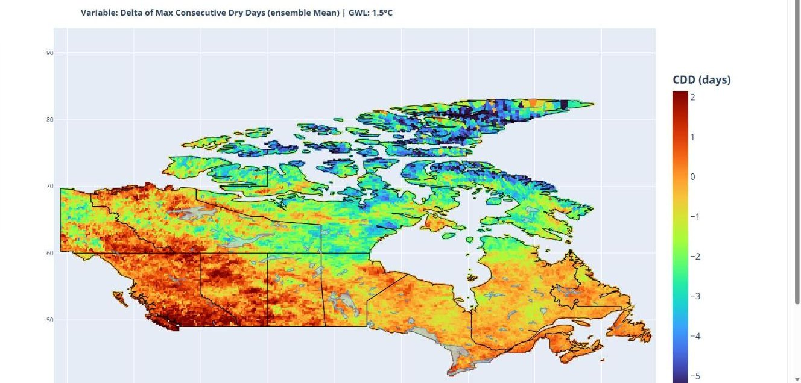
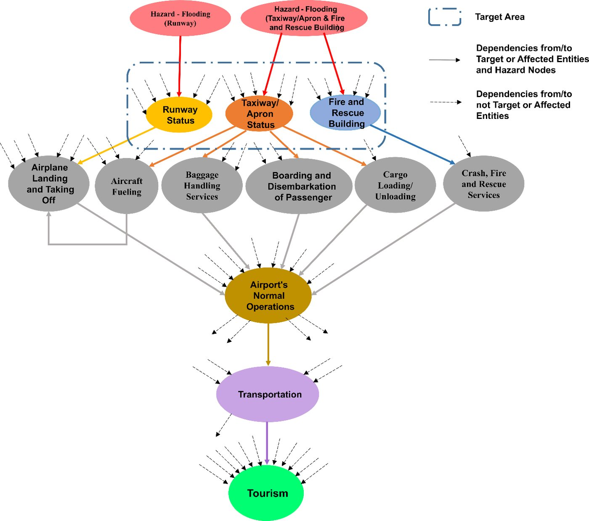
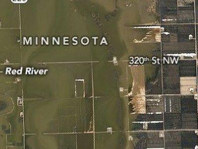

Live
Canada Climate Viewer
A web tool built with the National Research Council Canada that gives dam owners and engineers site-level climate projections, hydrometric gauge and dam locations, and changes in design floods across Canada.
Data and code
Tools and products from our research that others can use, with their status and how to get access.

A web tool built with the National Research Council Canada that gives dam owners and engineers site-level climate projections, hydrometric gauge and dam locations, and changes in design floods across Canada.

Step through a modelled 42-hour flood scenario at Hewanorra International Airport and watch failure and recovery spread from airport facilities to operations, roads and tourism.

A teaching tool showing how dependence between heavy rain and storm surge changes the odds that both are extreme in the same year.
Each paper's data availability statement says where its data can be found. Our models and analysis code are kept in the lab's version-controlled repositories and are shared with researchers on request; public repositories and datasets will be listed here as they are released. For a specific dataset or script, write to the lab with the paper title.